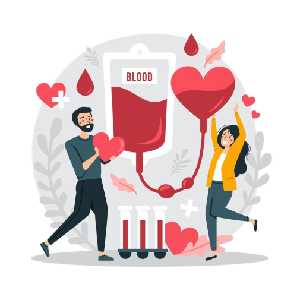
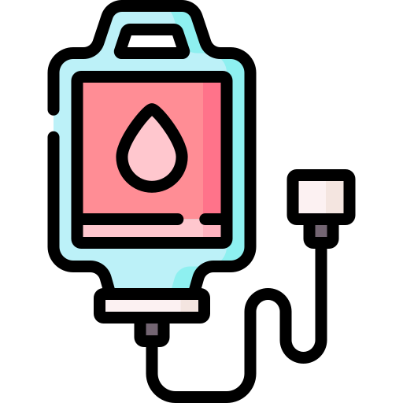

Blood Donation system
It is a site that helps facilitate the process of donating blood for volunteers.
Blood Donation:
It is an elective medical procedure in which blood or one of its compounds is transfused from
a healthy person to a patient who needs blood. Millions of people need this procedure every year;
It is used during surgery, accidents, or some diseases that require transfusion of certain blood components.
Blood Donation

Why donate blood?
Donating blood is a noble humanitarian act; Because it contributes to saving the lives of thousands
of patients who are in dire need of blood transfusions; In fact, one out of every ten patients admitted
to the hospital needs a blood transfusion, especially patients who suffer from malignant or incurable diseases,
as well as people who are exposed to serious accidents as a result of which they lost a large amount of blood,
as well as many patients during major surgeries, in addition to that. The components of blood are used in the
treatment of many serious diseases.
Benefits of donating blood:
- Increasing the activity of the bone marrow to produce new blood cells
- Increasing the activity of blood circulation
- Donating blood helps reduce iron in the blood
- The pepole who donate their blood at least once a year are less likely to suffer from circulatory diseases and leukemia